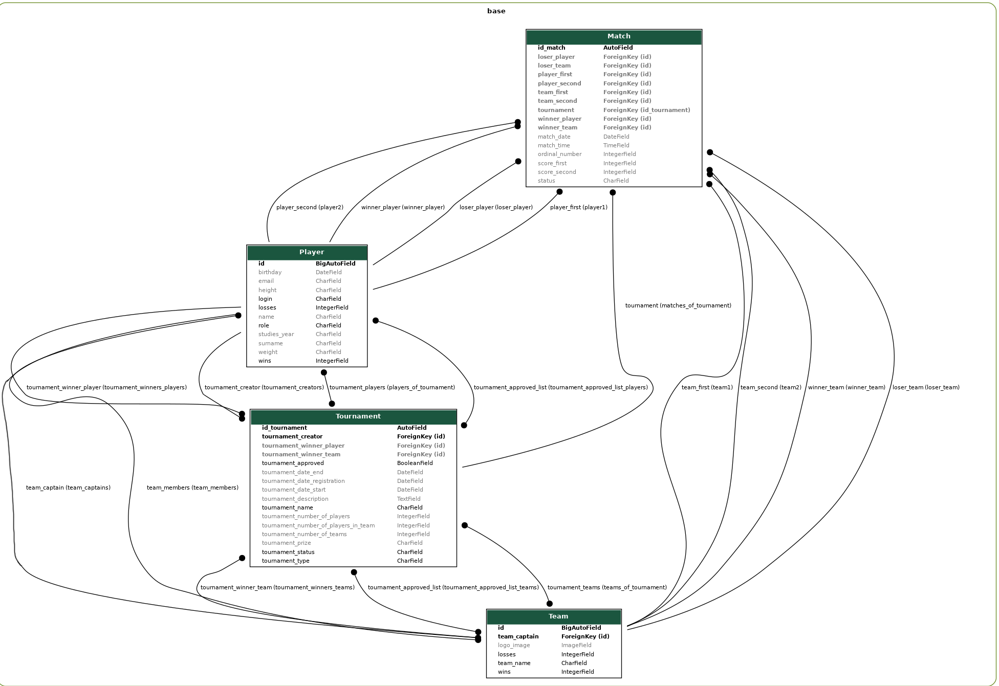

Studentské turnaje
- Autoři
- Vladyslav Kovalets
xkoval21@stud.fit.vutbr.cz - 45% projektu: připojení k databázi a serveru, front-end a back-end,
dokumentace, video
- Evgeniya Taipova
xtaipo00@stud.fit.vutbr.cz - 45% projektu: připojení k databázi a serveru, front-end a back-end,
dokumentace, video
- Andrei Sartin
xsarti00@stud.fit.vutbr.cz - 10% projektu: automatické odhlášení, logo, pár vztahů mezi modely, autentizace.
- URL aplikace
- https://xkoval21.pythonanywhere.com/
Uživatelé systému pro testování
| Login | Heslo | Role |
|---|
| xadmin00 | xadmin00 | Admin |
| team_creator | Your_password | Team Creator,
Tournament Participant |
| user123 | This password | Team Member |
| tournament_creator | Your_password | Tournament Creator |
| - | - | Unregistered user |
Video
Link na video
Automatické odhlášení po určité době nečinnosti – 5 minut. Ve videu jsme to zapomněli zmínit.
Implementace
Jako implementační jazyk jsme použili Python3.8 (framework Django).
Django jako webový framework využívá ke své práci architekturu MODEL VIEW TEMPLATE a navrhuje rozdělit vše do „vrstev“:
models.py je datová vrstva a způsob, jakým ji ukládáme do databáze.
Byly vytvořeny modely hráčů, týmů, turnajů a zápasů.
views.py shromažďuje všechna data potřebná k vytváření webových stránek nebo zpracování dat odeslaných prostřednictvím formulářů.
složka templates obsahuje html soubory, které přijímají data z views.py a zobrazují je na webové stránce.
urls.py organizuje práci odkazů na webu, na který odkaz vytvořit jaký druh a jakou šablonu.
forms.py pomáhá vytvářet a zpracovávat webové formuláře pro data od uživatelů.
Django poskytuje nástroje pro vytváření těchto vrstev a funkcí programu je sdílet data mezi vrstvami.
Databáze
Jako relační databázi používáme MySQL hostovanou na našem serveru.

Instalace
Jako server jsme použili PythonAnywhere.
Softwarové pozadavky: Python 3.10, Django 4.1.1, MySQL.
pip install django django-session-timeout
pip install django-session-timeout
pip install Pillow
pip install mysqlclient
Spuštění:
unzip xkoval21.zip
Vytvoříte MySQL databázi s těmito nastaveními:
Host='127.0.0.1'
Port='3306'
Database='iis'
User='root'
Password='xkoval21'
Spustíte skript script.sql v MySQL databázi.
python3 manage.py migrate --run-syncdb
python3 manage.py runserver
Stránka se nachází na adrese 127.0.0.1:8000